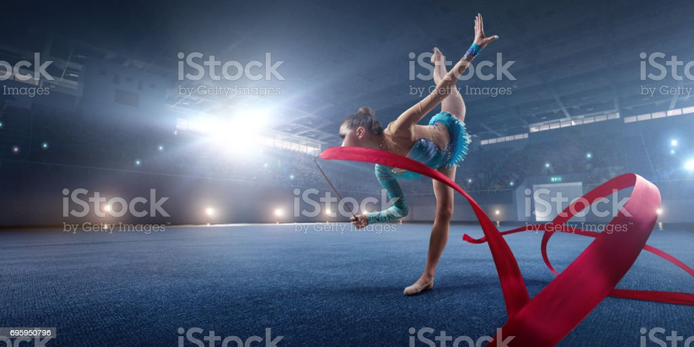
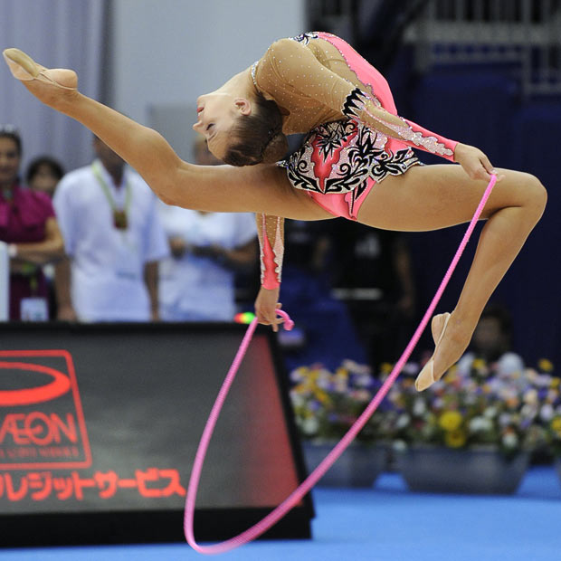
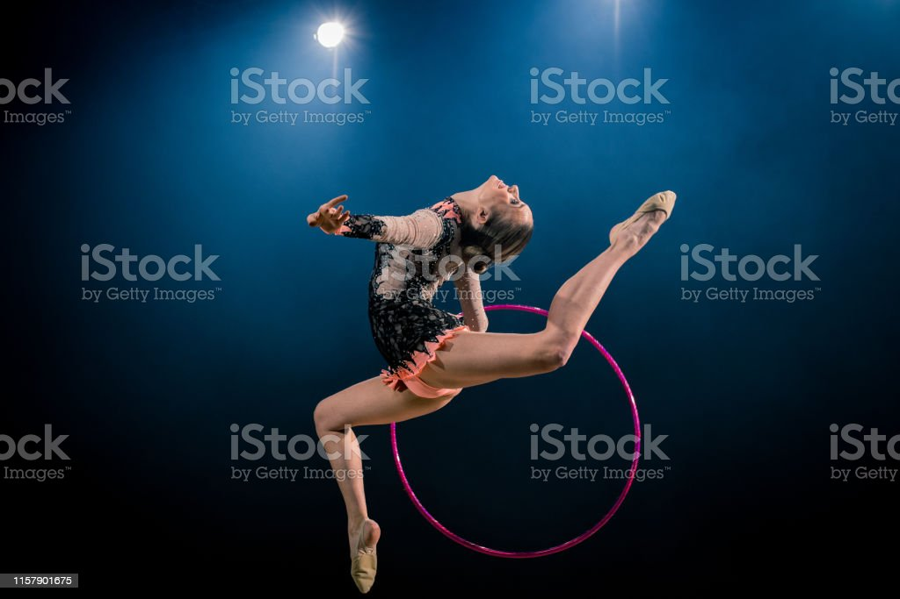
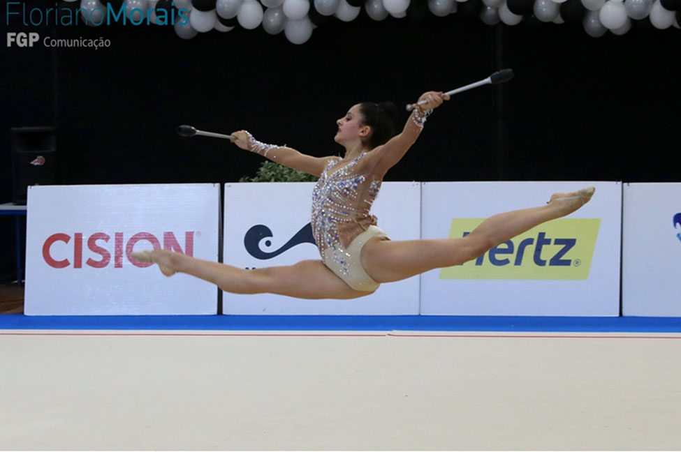

O meu Hobby e ginástica gosto muito de o fazer prático 3 vezes a semana e é incrivel e divertido.Prático com as minhas amigas no clube Algés e Dafundo.
Fasso ginástica rítimica de competição,por vezes e bastante cansativo mas adoro. Uma das minhas partes preferidas e as competições.
Em 2022 fui a suiça fazer reprezentação e foi incrivel,eu gostei imensso,nos apresentavamos com uma música portuguesa.
Eu adoro o meu hobby mas não e só um hobby, mas sim uma coisa que me faz esquecer todos os meus problemas.
As vezes até posso pensar em desestir mas depois lembro-me de todas as coisas que na ginástica me fisseram bem e para ser sinsera eu gostava de ser professora de ginástica uma dia mas isso ainda tenho que pensar bem !
A varias coisas muito bonitas na ginástica rítimica existem varios aparelhos que a fazem ficar mais incrivel
aparelhos de ginástica rítimicaNa primira imagem representa uma rapariga com o aparelho da bola e ela esta a fazer umas esparegata no ar enquanto segura na bola com a cabeça.
Na segunda imagem representa uma rapariga com o aparelho fita e ela esta a fazer um avião com a fita na mão direita
Na treseira imagem representa uma rapariga com o aparelho corda e ela esta a fazer uma corça a saltar pela corda
Na quinta imagem também representa uma rapariga com o aparelho arco e ela esta a fazer um avião e a segurar o arco na mão esquerda
Na seixta e ultima imagem representa uam rapariga com o aparelho massas a fazer uma gasela e a segurar as massas com as duas mãos